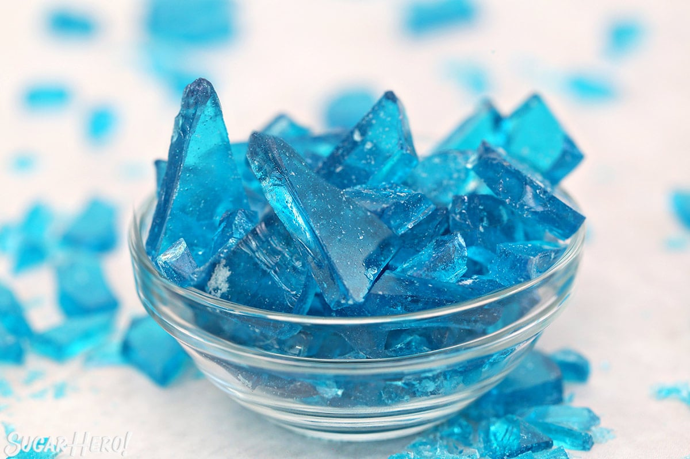

Crystal Blue Rock Candy

Crystal Blue Rock Candy is created in some of the finest mobile labs in the state of New Mexico, trying to create this masterpiece in a home kitchen could lead to more than just a knock from police...
Ingredients:
- 1/2 cup water, (4 fl oz)
- 8.25 oz light corn syrup, (3/4 cup)
- 14 oz granulated sugar, (2 cups)
- 2 tsp clear flavoring extract
- Blue gel food coloring – royal blue
- Candy thermometer
Recipe to Prepare:
- Line a baking sheet with foil and spray the foil with nonstick cooking spray, or use non-stick foil.
- In a medium saucepan, combine the water, corn syrup, and granulated sugar. Place the pan over medium-high heat, and stir until the sugar dissolves.
- Once it comes to a simmer, brush down the sides with a wet pastry brush to prevent sugar crystals from forming. Insert a candy thermometer.
- Continue to cook the candy without stirring until it reads 290 degrees Fahrenheit (143 C) on the thermometer. Watch the temperature carefully–a lower temperature might produce sticky candy, while a higher temperature runs the risk of producing green candy!
- Once at 290, take the pan off the heat and let it sit for a few moments, until rapid bubbles stop breaking on the surface. Add the flavoring and a drop or two of food coloring, and stir everything together.
- Pour the candy onto the prepared baking sheet and spread it into a thin layer. Let it set completely at room temperature.
- Once set, break it into small pieces. For the complete Breaking Bad experience, place the pieces in a large zip-top bag and smash them with a rolling pin until they are crushed, and place in small baggies to serve.
- Store the candy in an airtight container at room temperature.